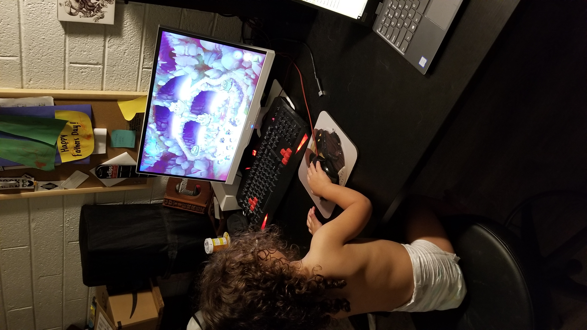

Welcome to my about me page!
My name is Austin Gutierrez
IFT301 | Week 1 | HW pt 1
I am a Military Veteran attending ASU in pursuit of my Bachelors Degree in Information Technology. I am currently working full time for the City of Tempe as a Programmer Analyst.
For the Fall Semester I am taking the following classes:
- IFT301 - Web Proframming for HCI
- IFT302 - Foundation of Information and Computer System Security
Three of my favourite movies are:
- Alien Click here for info
- Alien is a 1979 science fiction horror film directed by Ridley Scott and written by Dan O'Bannon. Based on a story by O'Bannon and Ronald Shusett, it follows the crew of the commercial space tug Nostromo who encounter the eponymous Alien, a deadly and aggressive extraterrestrial set loose on the ship. Source
- Fifth Element
- It stars Bruce Willis, Gary Oldman and Milla Jovovich. Primarily set in the 23rd century, the film's central plot involves the survival of planet Earth, which becomes the responsibility of Korben Dallas (Willis), a taxicab driver and former special forces major, after a young woman (Jovovich) falls into his cab. Source
- Silence of the Lambs.
- Search Results
Featured snippet from the web
A young F.B.I. cadet must receive the help of an incarcerated and manipulative cannibal killer to help catch another serial killer, a madman who skins his victims. Source
Achievable Goals this year
- Maintain a GPA of 3.8 or higher
- Complete a Professional Website
- Learn as much as possible from my classes
There is nothing better than a cold beer, and this one in particular is from a Bar called Barrio which is right across from the campus. My friends and I would frequently head there to do homework or wait for the next class.

I have a three year old daughter so whenever I try to do homework on my computer, it usually looks like this lol.